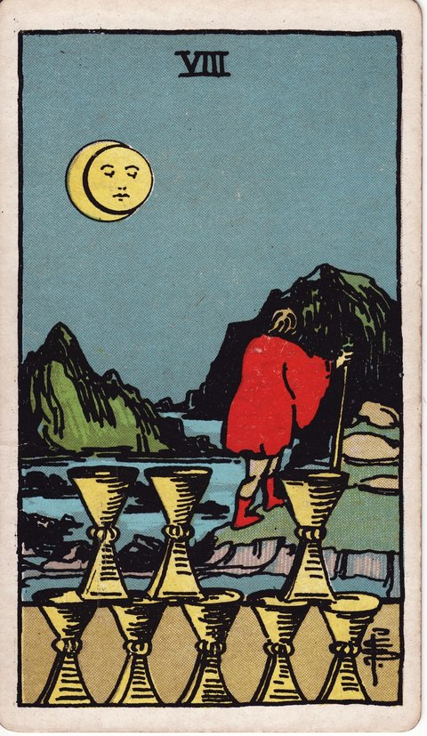

컵 · 타로 카드 백과사전
컵 8

정방향
키워드: 더 깊은 의미 추구 · 결단 · 떠남 · 못다 채운 허기 · 옮기는 발걸음 · 새 의미를 향한 등짐
조언: 익숙함을 떠나는 두려움보다 찾고자 하는 의미에 집중해보세요.
연애운
솔로
가벼운 만남보다 진지한 인연을 찾아 방향을 바꾸는 시기입니다. 표면적인 조건보다 마음이 통하는 사람을 찾아보세요.
커플
지금의 관계보다 더 깊은 의미를 찾아 떠나고 싶어지는 시기입니다. 그 마음이 든다면 회피하지 말고 정면으로 마주해보세요.
재물운
소비
만족스럽지 않은 소비 패턴을 정리하고 새로운 방식을 찾는 시기입니다. 익숙한 습관을 버리는 결단이 필요합니다.
투자
성과가 없는 투자를 정리하고 새로운 길을 찾는 시기입니다. 미련을 버려야 다음 기회를 잡을 수 있습니다.
취업운
구직
만족스럽지 않은 조건의 자리를 포기하고 더 나은 곳을 찾아 나서는 시기입니다. 당장의 안정보다 원하는 방향을 좇아보세요.
이직
더 큰 의미를 찾아 지금의 자리를 떠날 결심을 하는 시기입니다. 이 결정이 두렵더라도 원하는 방향이라면 나아가 보세요.
직장운
팀워크
맞지 않는 팀 방식에서 벗어나 새로운 협업 방식을 찾는 시기입니다. 익숙함보다 효율적인 방향을 택해보세요.
개인성과
만족스럽지 않은 업무에서 벗어나 새로운 역할을 찾는 시기입니다. 당장은 불안해도 원하는 방향으로 움직여보세요.
사업운
창업준비
품고 있던 아이템에 더는 확신이 서지 않아 처음부터 다시 그려보고 싶어지는 시기입니다. 마음이 이끄는 새로운 아이디어를 따라가 보세요.
운영중
지금의 사업 운영 방식으로는 원하는 성장에 한계가 있다고 느껴지는 시기입니다. 기존 틀을 벗어난 새로운 운영 전략을 검토해보세요.
학업운
시험준비
지금의 진로에 회의감을 느끼고 다른 길을 고민하는 시기입니다. 막연한 불안보다 실제로 원하는 방향을 찾아보세요.
진로고민
익숙한 전공보다 진짜 원하는 분야를 찾아 방향을 바꾸는 시기입니다. 늦었다는 생각보다 지금이라도 옳은 방향을 택해보세요.
건강운
신체
몸을 혹사시키던 것에서 벗어나 새로운 방식을 찾는 시기입니다. 건강을 해치는 습관이라면 과감히 끊어보세요.
정신
마음을 힘들게 하던 관계나 상황에서 벗어나려는 시기입니다. 정신 건강을 위해 거리를 두는 것도 필요한 선택입니다.
대인관계운
새로운 인연
의미 없는 관계를 정리하고 진짜 소중한 인연을 찾아 나서는 시기입니다. 넓은 인맥보다 깊은 관계에 집중해보세요.
기존 관계
형식적으로 이어온 관계를 정리할 때가 되는 시기입니다. 마음이 떠난 관계라면 붙잡고 있지 않아도 됩니다.
명예운
평판에 얽매이지 않고 자신의 길을 가는 시기입니다. 남들의 시선보다 스스로가 옳다고 믿는 방향을 따라보세요.
이사운
지금의 자리를 떠나 새로운 곳을 찾아 나서는 시기입니다. 익숙함에 대한 미련보다 원하는 삶을 향해 움직여보세요.
자식운
아이를 위해 더 나은 환경을 찾아 나서는 시기입니다. 당장의 불편함보다 아이의 장기적인 성장을 우선해보세요.
역방향
키워드: 미련 · 망설임 · 제자리걸음 · 질질 끄는 뒷걸음질 · 오락가락하는 다짐 · 늘어나는 짐
조언: 미루기만 하면 짐이 더 무거워지니 결단을 내려보세요.
연애운
솔로
끝난 관계에 대한 미련으로 새로운 만남에 나서지 못하는 시기입니다. 언제까지 미룰 것인지 스스로에게 물어보세요.
커플
정든 시간이 아까워 이 관계를 놓아야 한다는 마음을 자꾸 미루게 되는 시기입니다. 미련을 붙잡을수록 서로에게 더 힘든 시간이 될 수 있습니다.
재물운
소비
이미 손해로 굳어진 지출인데도 본전 생각에 정리를 못 하고 붙들고 있는 시기입니다. 더 늦기 전에 손을 떼는 결단이 필요합니다.
투자
손실 난 투자를 정리하지 못한 채 계속 끌려가고 있을 수 있는 시기입니다. 냉정하게 손절 기준을 세워보세요.
취업운
구직
성에 차지 않는 조건인데도 그동안 들인 시간이 아까워 지원을 쉽게 놓지 못하는 시기입니다. 기준을 다시 세우고 결단해보세요.
이직
떠나야 할 때라는 신호가 여러 번 있었지만 안정을 이유로 결정을 자꾸 뒤로 미루는 시기입니다. 안정에 대한 미련이 성장의 기회를 막고 있진 않은지 살펴보세요.
직장운
팀워크
팀 안의 문제가 반복되는데도 괜히 분란을 만들까 봐 그냥 넘어가고 있는 시기입니다. 미루기만 하면 문제가 더 커질 수 있습니다.
개인성과
적성에 맞지 않는다고 느낀 지 오래됐지만 새로운 시도가 두려워 그 자리를 지키고 있는 시기입니다. 변화를 위한 첫걸음을 내디뎌보세요.
사업운
창업준비
매출로 이어지지 않는 아이템에 이미 너무 많은 것을 쏟아부어 이제 와 발을 빼기가 아까운 시기입니다. 매몰 비용에 얽매이지 말고 다시 판단해보세요.
운영중
사업에 문제가 있다는 걸 스스로도 느끼면서 그 부분을 애써 외면하고 있을 수 있는 시기입니다. 결단을 미룰수록 손실만 커질 수 있습니다.
학업운
시험준비
그만두고 싶은 마음과 미련 사이에서 갈등하는 시기입니다. 계속할지 그만둘지 스스로 기준을 세워 결정해보세요.
진로고민
맞지 않는 길이라는 신호가 여러 번 왔는데도 포기가 두려워 계속 붙들고 있는 시기입니다. 지금이라도 방향을 바꾸는 것이 두려워 미루고 있지는 않은지 돌아보세요.
건강운
신체
몸에 무리가 가는 걸 느끼면서도 당장 편한 쪽을 택하다 컨디션이 계속 처지는 시기입니다. 작은 계기라도 만들어 변화를 시작해보세요.
정신
누군가와의 관계나 지금 상황이 마음을 계속 갉아먹고 있는데, 인정하기 싫어 자꾸 괜찮은 척하게 되는 시기입니다. 혼자 견디기보다 도움을 구해보세요.
대인관계운
새로운 인연
오래갈 인연이 아니라는 예감이 들면서도 아쉬운 마음에 정리를 미루게 되는 시기입니다. 미련보다 스스로의 마음을 먼저 살펴보세요.
기존 관계
이미 소원해진 관계에 미련을 두며 놓지 못하고 있을 수 있는 시기입니다. 붙잡는다고 되돌아오지 않을 수도 있음을 받아들여보세요.
명예운
평판에 대한 미련으로 결단을 미루고 있을 수 있는 시기입니다. 남의 평가에 얽매여 정작 원하는 선택을 놓치지 마세요.
이사운
떠나야 할 이유가 쌓여가는데도 정든 곳이라 결심이 쉽게 서지 않는 시기입니다. 무엇이 발목을 잡고 있는지 스스로에게 물어보세요.
자식운
아이를 위해 바꿔야 할 것들이 눈에 보이는데도 귀찮음과 두려움에 계속 미루게 되는 시기입니다. 아이를 위해서라도 결단을 더 미루지 않는 것이 좋습니다.
같은 슈트: 컵 에이스 · 컵 2 · 컵 3 · 컵 4 · 컵 5 · 컵 6 · 컵 7 · 컵 8 · 컵 9 · 컵 10 · 컵 시종 · 컵 기사 · 컵 퀸 · 컵 킹
홈에서 직접 카드 뽑아보기 ↗